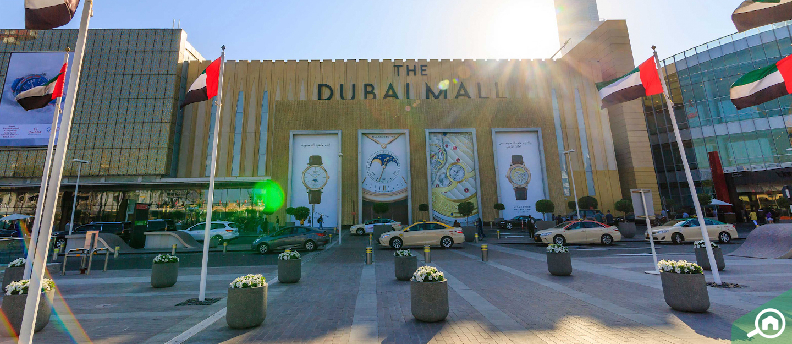

Dubai es una ciudad impresionante que ofrece experiencias increíbles tanto para turistas como para residentes. Con su brillante horizonte, hoteles de lujo, impresionantes centros comerciales y hermosas playas, Dubai se ha convertido en un destino turístico de clase mundial.
En general, Dubái es una ciudad extraordinaria que combina a la perfección modernidad y tradición. Ofrece una gran cantidad de experiencias, atracciones y oportunidades para que los visitantes creen recuerdos inolvidables.
Dubai también es conocida por sus increíbles oportunidades de compras. La ciudad alberga numerosos centros comerciales de lujo, como el Dubai Mall y el Mall of the Emirates, donde los visitantes pueden disfrutar de una jornada de compras o disfrutar de opciones de entretenimiento de primer nivel. Dubai también es famosa por sus mercados o zocos tradicionales, donde los visitantes pueden comprar oro, especias y textiles.
Dubái no es sólo una ciudad de vistas y experiencias impresionantes, sino también una potencia económica y un centro global para los negocios y el comercio. Ofrece una gran cantidad de oportunidades para emprendedores, innovadores y profesionales de todo el mundo. Con una infraestructura de última generación, zonas comerciales libres de impuestos y un entorno empresarial favorable, Dubái se ha convertido en un imán para el talento y la inversión.
Una de las atracciones únicas de Dubai es la Palm Jumeirah, una isla artificial con forma de palmera. Alberga hoteles de lujo, villas de lujo y una variedad de opciones de entretenimiento, incluidos parques acuáticos y acuarios submarinos. Palm Jumeirah es un destino de visita obligada para aquellos que desean experimentar el lujo y la opulencia.
Uno de los monumentos más famosos de Dubái es el Burj Khalifa, el edificio más alto del mundo. Ubicado a una altura de 828 metros, el Burj Khalifa es una impresionante obra maestra arquitectónica que ofrece impresionantes vistas de la ciudad desde su plataforma de observación. Los visitantes también pueden disfrutar de un impresionante espectáculo de fuentes de agua que se celebra en la base de la torre.
Además, Dubái ofrece una escena culinaria vibrante y diversa con restaurantes que sirven cocina de todo el mundo. Desde cenas gourmet hasta comida callejera, Dubái satisface todos los gustos y presupuestos. Los visitantes también pueden disfrutar de la cocina tradicional emiratí y experimentar la cultura beduina en los campamentos del desierto.
Dubai también conserva su patrimonio y cultura. El antiguo distrito de Dubái, conocido como Al Fahidi, contiene edificios tradicionales, museos y galerías de arte que muestran la rica historia y el patrimonio de la ciudad. Las actividades tradicionales, como los cruceros en dhow, los safaris por el desierto y los paseos en camello, también ofrecen a los visitantes una idea del estilo de vida tradicional de los Emiratos.
Dubái se enorgullece de su hospitalidad y es conocida por sus lujosos hoteles y complejos turísticos que ofrecen los más altos estándares de confort y lujo. Los huéspedes pueden relajarse y rejuvenecer en las lujosas instalaciones de spa o tomar el sol en las prístinas playas de arena blanca.
Dubái también es un destino ideal para los amantes de las emociones fuertes y los adictos a la adrenalina, con su variedad de actividades de aventura como safaris por el desierto, recorridos por las dunas y paracaidismo.